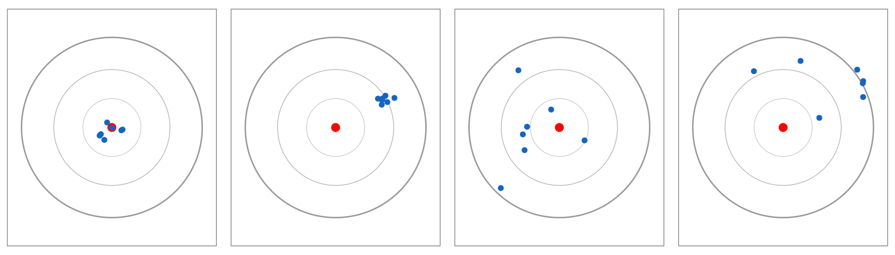

Part 1 數據品管統計（Nielsen's Food Analysis 第4章）／第 1 章
統計入門：平均數、標準差與變異係數 Measures of Central Tendency & Dispersion — 你的第一支 R 程式
你進檢驗室第一天，前輩遞給你 4 個數字：「同一塊肉的水分，幫我整理成報告上的一個數字。」這一章就是教你怎麼有憑有據地回答。
🔑 課前暖身
你把同一塊肉的水分量了 4 次，得到 4 個不太一樣的數字——報告到底該寫哪一個？
本章教你把一組重複數據濃縮成「一個共識」與「一個散布程度」，並用打靶圖搞懂準確度與精密度。
本章新詞先認識：平均數＝加總除以個數的共識值；標準差 SD＝數據彼此合不合群；變異係數 CV＝散布程度換成百分比；R＝免費統計軟體，本章只當計算機用。
名詞卡住了？回 Ch0 名詞圖鑑 查白話解釋與比喻。
本章新詞先認識：平均數＝加總除以個數的共識值；標準差 SD＝數據彼此合不合群；變異係數 CV＝散布程度換成百分比；R＝免費統計軟體，本章只當計算機用。
名詞卡住了？回 Ch0 名詞圖鑑 查白話解釋與比喻。
學習目標
- 了解為什麼食品分析一定要「重複測定」並用統計整理數據
- 會用 R 把量測值存成向量，計算平均數、中位數、標準差、變異係數
- 能分辨「準確度」與「精密度」，並說出三大誤差來源
- 會計算絕對誤差與相對誤差百分比（%Erel）
1.1 為什麼需要統計？
食品分析的結果（水分、粗脂肪、重金屬、農藥殘留…）會拿來做重大決策： 產品能否出貨、標示是否屬實、是否超過法規限量。Nielsen 第 4 章開宗明義： 「適當的數據收集與分析，可以避免基於數據做出錯誤決策。」
單一次量測無法告訴我們任何「信心」——所以我們至少重複測定 3 次， 再用統計把這些重複值變成「平均值 + 變異」的專業報告。本章就從零開始，用 R 完成這件事。
🧪 貫穿全課的範例
生漢堡肉水分含量 4 次重複測定：64.53、64.45、65.10、64.78（%）（Nielsen Table 4.1）。
這組數據會陪我們走完整個課程。
1.2 第一支 R 程式：把數據存進「向量」
R 裡最基礎的資料結構是向量（vector）：用 c() 把一組數字裝在一起， 再用 <- 指派給一個變數名稱。就這麼簡單！
# 把 4 次水分測定值存進向量 moisture moisture <- c(64.53, 64.45, 65.10, 64.78) moisture # 輸入名稱按 Enter，R 會印出內容 #> [1] 64.53 64.45 65.10 64.78 length(moisture) # 資料筆數 #> [1] 4
R Console輸出 output
> moisture [1] 64.53 64.45 65.10 64.78 > length(moisture) [1] 4
💡 給完全新手
c 是 combine（組合）的意思；<- 讀作「存到」。
在 RStudio 裡按 Ctrl+Enter 逐行執行，右下角環境視窗會看到
moisture。1.3 中央趨勢：平均數與中位數
x̄ = Σxin
= 64.53 + 64.45 + 65.10 + 64.784 = 64.72 %
Nielsen 式 (4.1)–(4.2)：平均數是「最佳實驗估計值」，但平均數本身不保證準確
另一個指標是中位數（由小到大排在中間的值）。本例中位數 = 64.655%。 平均數對極端值較敏感，因此若數據中有可疑值（第 5 章的 Q 檢定），中位數是穩健的替代方案。
1.4 離散程度：標準差與變異係數
標準差 SD衡量重複測定值的散布程度，是「精密度」最常用的指標。 因為真實平均值未知，樣本標準差一律用 n−1（Nielsen 式 4.5）：
\(\mathrm{SD} = \sqrt{\dfrac{\sum (x_i - \bar{x})^2}{n - 1}} = \sqrt{\dfrac{0.257}{4 - 1}} = \sqrt{0.0857}\) = 0.2927 %
Σ(xᵢ−x̄)² = 0.0361+0.0729+0.1444+0.0036 = 0.257（Nielsen Table 4.1）
變異係數 CV%（又稱相對標準偏差 RSD）把標準差除以平均數，方便跨方法、跨濃度比較：
CV% = SDx̄ × 100 =
0.292764.72 × 100 = 0.452 %
Nielsen 式 (4.6)–(4.7)；經驗法則：CV < 5% 通常可接受（依方法而異）
moisture <- c(64.53, 64.45, 65.10, 64.78) xbar <- mean(moisture) # 平均數 s <- sd(moisture) # 標準差（R 的 sd 內建就是 n-1 版） cv <- s / xbar * 100 # 變異係數 % round(c(mean = xbar, SD = s, CV = cv), 3) #> mean SD CV #> 64.715 0.293 0.452 # 手動驗證 SD 公式（教學用） dev <- moisture - xbar # 偏差 sqrt(sum(dev^2) / (length(moisture) - 1)) #> [1] 0.2926317
R Console輸出 output
> round(c(mean = xbar, SD = s, CV = cv), 3) mean SD CV 64.715 0.293 0.452 > sqrt(sum(dev^2) / (length(moisture) - 1)) [1] 0.2926317
1.5 準確度 vs 精密度：打靶圖

圖 1-1 Nielsen Fig 4.1 重繪：(a) 準又精 (b) 精但不準（系統誤差）(c) 準但不精（隨機誤差大）(d) 又偏又散
精密度 Precision
重複測定值彼此接近的程度 → 由 SD / CV 評估。
只靠自己的數據就能計算。
對應：隨機誤差
重複測定值彼此接近的程度 → 由 SD / CV 評估。
只靠自己的數據就能計算。
對應：隨機誤差
準確度 Accuracy
測定值接近「真值」的程度 → 需要已知真值的樣品 （標準品 CRM、加標回收、實驗室間比對）才能評估。
對應：系統誤差
測定值接近「真值」的程度 → 需要已知真值的樣品 （標準品 CRM、加標回收、實驗室間比對）才能評估。
對應：系統誤差
1.6 誤差的三大來源與相對誤差
| 誤差類型 | 特性 | 食品實驗室例子 | 克服方法 |
|---|---|---|---|
| 系統誤差 (determinate) | 固定偏向同一方向 | 移液器一直少吸 0.04 mL；儀器未校正 | 校正儀器、做空白、加回收修正 |
| 隨機誤差 (indeterminate) | 正負隨機出現、無法消除 | 讀滴定管刻度、終點顏色判斷、儀器噪音 | 增加重複次數取平均（統計可處理） |
| 疏失 (blunder) | 明顯錯誤、使數據無效 | 加錯試劑、漏加樣品（「星期一症候群」） | 確認後整筆捨棄，不可納入統計 |
當真值已知（如標準品 65.05%），可以計算誤差來評估準確度：
Eabs = x − T = 64.72 − 65.05 = −0.33 %
%Erel = x − TT × 100 = 64.72 − 65.0565.05 × 100 = −0.507 % Nielsen 式 (4.15)–(4.18)：負號表示結果偏低 0.507%，方向資訊要保留
%Erel = x − TT × 100 = 64.72 − 65.0565.05 × 100 = −0.507 % Nielsen 式 (4.15)–(4.18)：負號表示結果偏低 0.507%，方向資訊要保留
📐 ISO/IEC 17025 提醒
Nielsen 在此特別註明：實驗室認證規範 ISO/IEC 17025 要求實驗室必須估計
「量測不確定度 (Uncertainty of Measurement)」。這正是本課程 Part 2（第 6 章起）的主題——
先學好誤差與統計，才能懂不確定度。
# 準確度：與真值比較
true_value <- 65.05
Eabs <- mean(moisture) - true_value
Erel <- Eabs / true_value * 100
round(c(Eabs = Eabs, Erel_pct = Erel), 3)
#> Eabs Erel_pct
#> -0.335 -0.515 #（用未四捨五入的 mean 計算；課本以 64.72 計得 -0.507%）
# 練習：Nielsen 章末習題——乾物質 4 次測定
dry <- c(88.62, 88.74, 89.20, 82.20)
round(c(mean = mean(dry), SD = sd(dry),
CV = sd(dry)/mean(dry)*100), 2)
#> mean SD CV
#> 87.19 3.34 3.83 # CV<5% 但...82.20 看起來很可疑？第5章見分曉
R Console輸出 output
> round(c(Eabs = Eabs, Erel_pct = Erel), 3) Eabs Erel_pct -0.335 -0.515 > round(c(mean = mean(dry), SD = sd(dry), + CV = sd(dry)/mean(dry)*100), 2) mean SD CV 87.19 3.34 3.83
📊 Excel 也會算：描述統計對照
📊 沒有 R 也能動手
把水分 64.53、64.45、65.10、64.78 輸入
練習：把習題的乾物質 88.62、88.74、89.20、82.20 放
A1:A4，再用右表公式。Excel 的 STDEV 內建就是 n−1 版，與 R 的 sd() 完全一致。| 任務 | Excel 公式 | 說明 |
|---|---|---|
| 平均數 | =AVERAGE(A1:A4) | → 64.715 |
| 標準差 SD | =STDEV(A1:A4) | → 0.2927（樣本 n−1） |
| 中位數 | =MEDIAN(A1:A4) | → 64.655 |
| 變異係數 CV% | =STDEV(A1:A4)/AVERAGE(A1:A4)*100 | → 0.452 |
B1:B4，同法算出 mean=87.19、SD=3.34、CV=3.83%。